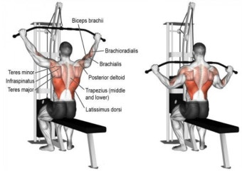
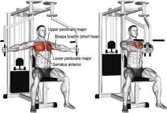
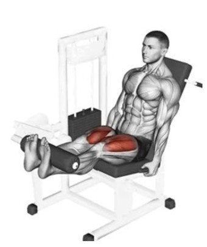

운동 기구 사용 가이드
1. 랫풀다운 (Lat Pulldown)

주요 운동 부위: 등 근육 (광배근), 이두근
설명: 등 상부와 측면 근육을 넓고 두껍게 만드는 데 효과적인 운동입니다. 앉은 자세에서 바(Bar)를 잡고 광배근의 수축을 느끼면서 가슴 쪽으로 당깁니다. 어깨가 으쓱되지 않도록 주의해야 합니다.
팁: 그립을 넓게 잡을수록 등 바깥쪽(광배근의 넓이)이 발달하고, 좁게 잡을수록 등 안쪽과 두께가 발달합니다.
2. 펙덱플라이 (Pec Deck Fly)

주요 운동 부위: 가슴 근육 (대흉근 중앙)
설명: 가슴 근육의 중앙 부분을 집중적으로 고립시켜 운동하는 데 사용됩니다. 벤치프레스나 푸시업으로는 자극하기 어려운 가슴의 안쪽 라인을 다듬는 데 효과적입니다. 어깨 관절에 무리가 가지 않도록 주의하며 패드를 밀어줍니다.
팁: 팔꿈치를 살짝 굽힌 상태를 유지하고, 가슴을 최대한 모아준다는 느낌으로 동작을 수행하세요.
3. 레그 익스텐션 (Leg Extension)

주요 운동 부위: 허벅지 앞쪽 (대퇴사두근)
설명: 허벅지 앞쪽 근육인 대퇴사두근을 발달시키는 데 최적화된 기구입니다. 무릎 관절의 움직임만으로 근육을 수축시키기 때문에 다른 근육의 개입 없이 목표 부위에 집중할 수 있습니다. 무릎 통증이 있는 경우 가볍게 시작해야 합니다.
팁: 발목 패드가 정강이 아래에 위치하도록 조절하고, 최고 수축 지점에서 1~2초간 멈췄다가 천천히 내리세요.